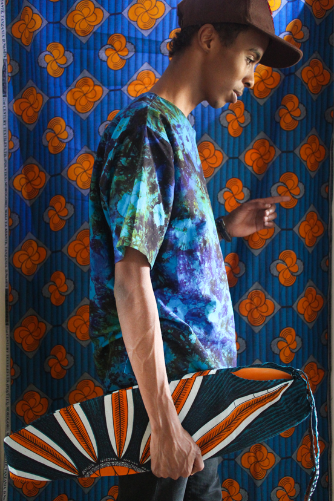
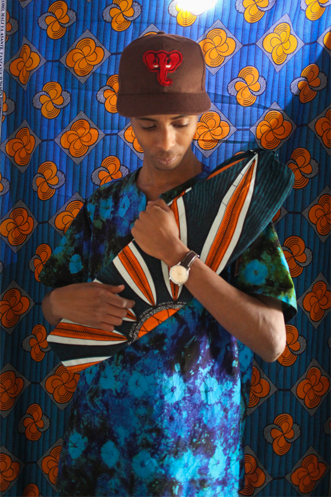
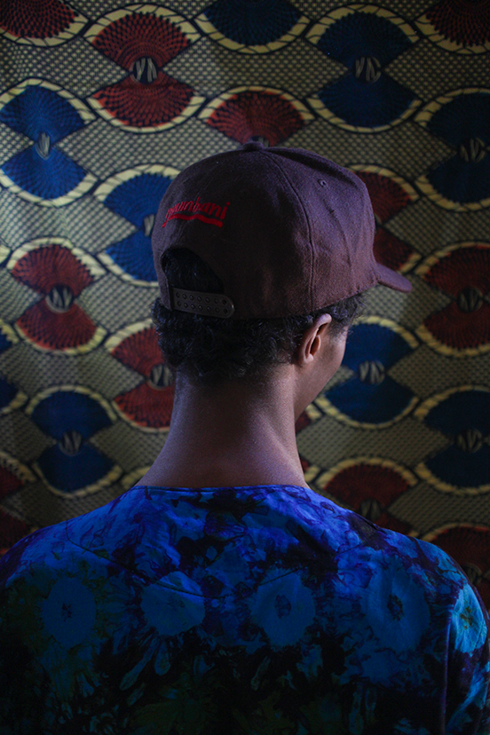
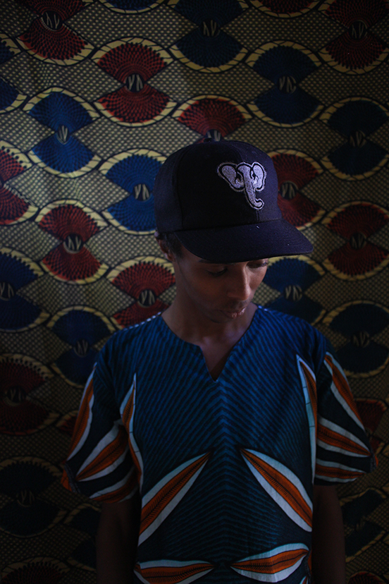
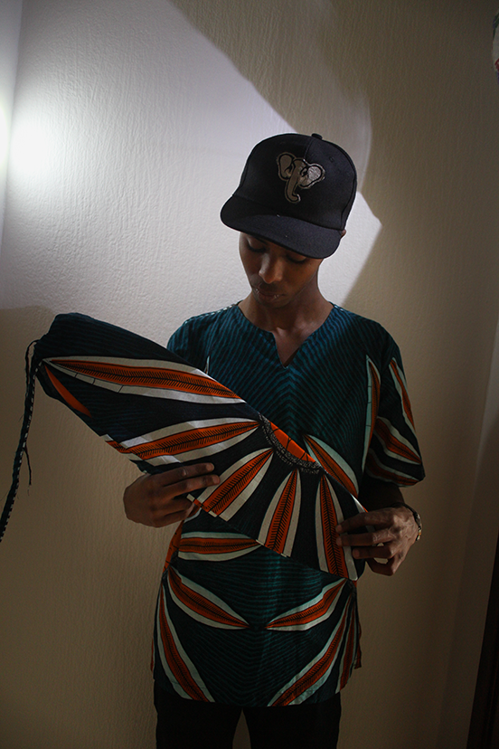
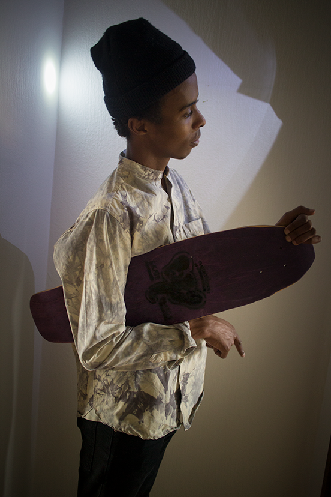

What is Nyumbani Skateboards?
Nyumbani Skateboards is an homemade skate and clothes company which is inpired by Africa, recycling, secondhand and oldschool skateboards that wants to mediate a feeling of simplicity. The brand is founded by the two brothers Jonathan Johansson and David Johansson from Sweden. The company was founded the year 2013. Mostly because they wanted to express their main interests "Design, Skateboarding and Africa" through creativity. The word Nyumbani comes from Kiswahili. A language that is widely spoken around east africa like, Kenya, Burundi, Tanzania and Uganda.
How we manufacture our boards
Our idéa is to make new minicruisers from old used Skateboards. Skaters use their boards a certain amount of time. When they don't have any use of them anymore we take care of it and reuse them. The board goes through a certain amount of steps before we deliver it to the new customer.
Klicka för större bild
- 
- 
- 
- 
- 
- 
David Johansson
Skaparen av alla brädor och kläder som syns på webbsidan.
daudi_95@hotmail.com


Jonathan Johansson
Webbutvecklare som har hand om webbsidan och de sociala medierna på Nyumbani
jjohanssonjonathan@gmail.com